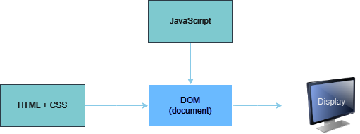
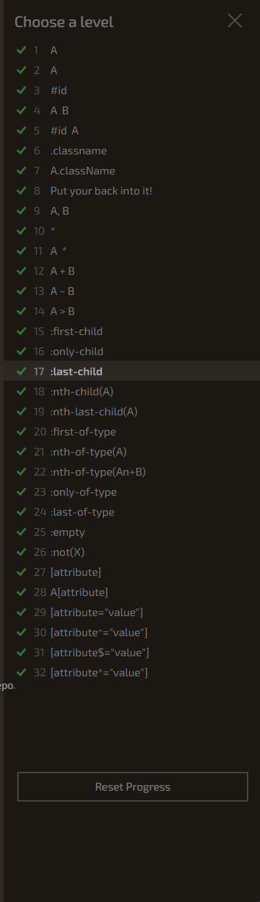
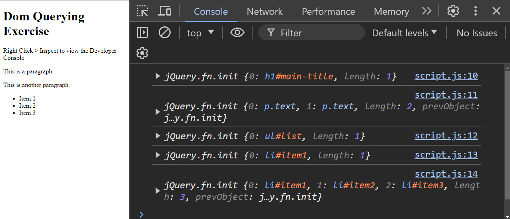

DOM Querying
Objectives
- Describe the what the DOM is and its relationship to HTML and CSS
- Utilize CSS selectors to access the content of HTML elements using JavaScript
- Use JQuery to look up an element by class or id and read its attributes
Key Terms
DOM
Document Object Model; the programmable interface for interacting with elements on an HTML page
DOM query
a search through the DOM for elements that match a specific CSS selector
JQuery
a JavaScript library that eases interacting with the DOM; often used with a $
$("p") // selects all paragraphs
parent
an element's parent is the element directly "containing" it. <ol> is the parent in this example:
<ol>
<li>child</li>
</ol>
child
an element nested directly beneath an outer parent element. <li> is the child in this example:
<ol>
<li>child</li>
</ol>
element selector
a simple CSS selector that matches all elements of that type. In JQuery, we could query element selectors like:
$("h1") // matches all h1 elements on the page
.class selector
selector preceded by a . that matches elements assigned to this class attribute. In JQuery, we could query .class selectors like:
$(".loud") // matches all elements where class="loud"
#id selector
selector preceded by a # that matches the element assigned to this id attribute. In JQuery, we could query #id selectors like:
$("#myFavoriteParagraph") // matches the element where id="myFavoriteParagraph"
DOM Querying Assignment
Make sure to go through the guide to starting an assignment before continuing. There will be a folder called "examples" where you can try out the example code below.
DOM Background
Websites are displayed using a JavaScript Object.
But, wait! Didn't we just learn about how HTML and CSS create the structure and looks of a website?
Well, you're right. But your browser isn't actually able to understand HTML and CSS directly. After HTML and CSS files are loaded into a browser, the browser then uses those HTML and CSS files to generate a JavaScript Object to reprsent them. This all happens behind the scenes, so it gives the illusion that your browser actually understands HTML and CSS.
The Document Object Model, or DOM for short, is how JavaScript sees your webpage. When you write HTML and CSS, your browser turns them into a JavaScript object, which is the DOM.

The DOM Tree
Recall that HTML documents are composed of elements, which are composed of tags.
Tags usually come in pairs, with an opening tag and closing tag.
<html>
<head></head>
<body>
<h1>This is the Main Header</h1>
<p>This is a paragraph of text.</p>
</body>
</html>
In the code above, you can identify the closing tags because they start with </ instead of just <.
The <h1> tag starts the header, and then the </h1> indicates the end of the header section.
Notice that the h1 tag both opens and closes "inside of" the body tag. When one tag is placed directly inside of another tag in this way, we say that the outer tag is the parent of the inner tag. So in this case, we'd say: the body tag is the parent of the h1 tag.
Inversely, we'd also say that the h1 tag is a child of the body tag.
Note: the <h1> tag above is also fully enclosed within the <html> tag. However, it's not accurate to say that the <html> tag is the parent of the <h1> tag. The <html> is the parent of the <body> tag, and it's more like a "grandparent" to the <h1> tag. More generally, we would describe the <h1> tag as a "descendant" of the <html> tag.
If you were to draw the relationship between each of the elements in this HTML sample, you'd get a tree like this:
o html
/ \
/ \
/ \
/ \
o body o head
/ \
/ \
/ \
o h1 o p
This is how the DOM organizes your HTML elements, called the DOM Tree. Not completely unlike a family tree!
Accessing Elements in the DOM
Recall that the DOM is a JavaScript object that represents all of the HTML elements in your HTML document.
The DOM provides us with many different ways to interact with it using JavaScript. You can do stuff like:
- Look up an element in the tree and change its style properties, thus changing its appearance.
- Add a new element to the tree using only JavaScript code (instead of HTML)
To simplify our interactions with the DOM, we're going to use a library called JQuery. You can recognize JQuery use in the code anywhere you see a $ symbol.
Let's look at a few examples of how we can interact with the DOM. Suppose our document consists of the following HTML:
<html>
<body>
<div class="first-section" id="section1">
<p>First paragraph</p>
<p>Second paragraph</p>
</div>
<div class="second-section">
<p>Third Paragraph</p>
<p>Fourth paragraph</p>
</div>
</body>
</html>
We can use JQuery's $ function to query (search) for elements that match a CSS selector.
CSS selectors are very versatile, but for now we're concerned with just three types:
-
element selector. Look up an element based on its tag name. For example: using the selector "p" would select the first
<p>element in the document. -
.class selector. This selector is used for looking up elements based on CSS classes they are assigned to using their
classattribute. To indicate we are using a .class selector, we need to prefix the selector with a period. For example: the selector ".first-section" would select the first<div>. -
#id selector. This selector is used for looking up elements based on its
idattribute. To indicate we are using an #id selector, we need to prefix the selector with a hashtag (#). For example, the selector "#section1" would also select the first<div>.
$("selector") returns an element that comes with its own set of properties and functions you can interact with. Here's an example that looks up the first section above using a .class selector (notice the DOT before the name of the CSS class) and then uses JQuery's attr function to read the id of that element.
let element = $(".first-section");
console.log(element.attr("id")); // Logs "section1"
You can learn about more CSS selectors on the W3Schools Reference
Note: sometimes the selector you use will apply to multiple elements. When this happens, you're going get back an object from JQuery that wraps all of these and can be treated in some ways like an array.
Here's an example use:
let elements = $("p"); // element selector that selects all <p> elements
console.log(elements.length); // prints "4", since there are 4 paragraph elements in the above HTML
for (let i=0; i < elements.length; i++){
console.log(elements[i].textContent); // prints the text in each paragraph
}
Once you have an element that you've looked up, you can also access its children via JQuery's children() function
let element = $(".second-section"); // select the element.
let children = element.children(); // Access its children elements.
console.log(children.length); // prints 2
for (let i=0; i < children.length; i++){
console.log(children[i].textContent); // prints the text for each child paragraph
}
Complete the DOM Querying Exercise before moving forward.
DOM Querying Exercise
CSS Diner
Before beginning this exercise, we need to familiarize ourselves a bit more with CSS Selectors. For this, there are 2 things I want you to do before moving on to the next section:
-
Take a look at the W3 Schools CSS Selector Reference if you haven't already. You don't need to memorize everything, just take a look to get a better idea of how many CSS Selectors there are.
-
Play the CSS Diner game. Complete at least up to Level 17 (although I would recommend just completing all 32 levels. It shouldn't take too long). Then, when you're finished, take a screenshot of your completed levels for submission, like this:

Exercise Instructions
-
Open
index.htmlin your exercise directory and read the HTML code. Open up the Developer Console and openscript.jsin VS Code. -
In
index.html, notice the extra<script>tag at the bottom of the<body>. This is what "imports" JQuery into our HTML file. -
Use JQuery to select the following elements and log them to the console:
-
The
<h1>element. -
All elements with the class
text -
The
<ul>element by it'sid. -
The first
<li>element. -
All
<li>elements.
-
-
Open up your Developer Console, and verify that you see something similar:

Submitting
Complete the questions in quiz.md if you haven't already.
Please follow the instructions in submitting an exercise to submit your assignment solution.